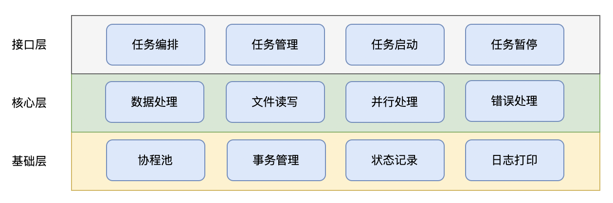
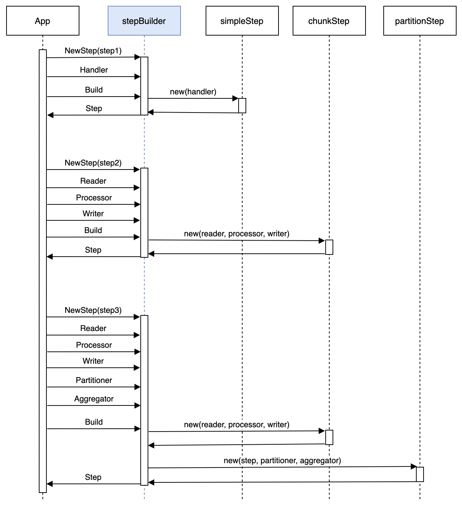
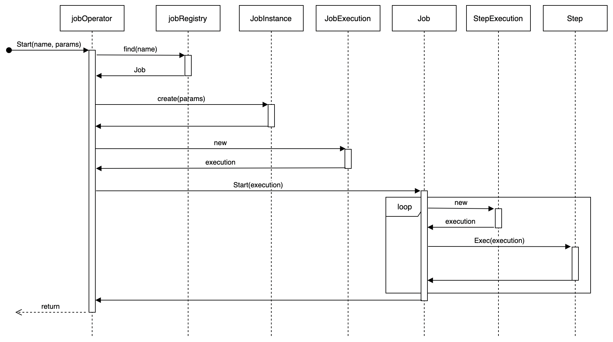
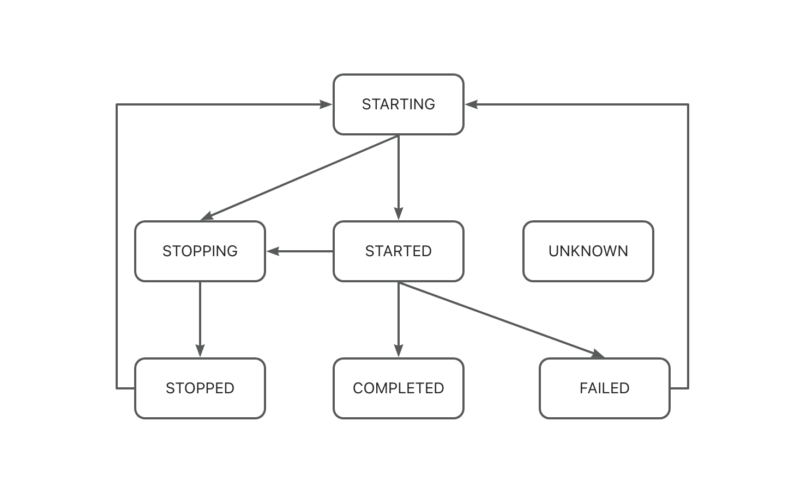

Architecture Design
Overall Architecture
GoBatch consists of three layers:
Interface Layer
- Provides APIs for upper-level applications
- Includes job orchestration, management, start and pause operations
Core Layer
- Provides job execution engine
- Includes common components for data processing, file I/O, parallel processing, and error handling
Foundation Layer
- Goroutine pool management
- Transaction management
- Job execution state recording
- Logging

As a batch processing framework, GoBatch's core capabilities are job orchestration and execution. Applications must first complete job orchestration through GoBatch interfaces before executing tasks.
In terms of job structure, a Job consists of multiple Steps, each containing business logic, executed in sequence. Job orchestration involves constructing different business logic into multiple Steps and assembling them into a Job in a specific order, managed by the GoBatch runtime. As a batch processing framework, GoBatch can manage multiple jobs.
During job execution, applications can pass parameters to specified jobs. GoBatch generates a JobInstance based on the input parameters. A JobInstance may be executed multiple times, and for each execution, GoBatch creates a JobExecution record to track the execution state. Similarly, each Step execution generates a StepExecution record. GoBatch stores JobInstance, JobExecution, and StepExecution through Repository in the database.
GoBatch supports multiple ways to trigger job execution. Applications can trigger jobs through scheduled tasks, real-time events, or command-line interfaces.
The execution flow of GoBatch batch processing applications is as follows:

Core Components
Job
Job is the highest-level concept in batch processing, representing a complete batch task. Each Job contains one or more Steps executed in a specific order. The main responsibility of a Job is to coordinate the execution of Steps. For detailed information about Jobs, see Job.
Step
Step is an independent processing unit within a Job. GoBatch supports three types of steps:
SimpleStep
- Executes a task in a single thread
- Suitable for simple processing logic
- Implements business logic through Handler or Task interface
ChunkStep
- Processes data in chunks
- Implements "read-process-write" pattern
- Supports transaction management
- Main components:
- ItemReader: Data reading
- ItemProcessor: Data processing
- ItemWriter: Data writing
PartitionStep
- Supports parallel processing
- Splits large tasks into subtasks
- Can aggregate subtask results
- Main components:
- Partitioner: Task partitioning
- Aggregator: Result aggregation
For detailed information about Steps, see Step.
Builders
JobBuilder
- Used to build Job instances
- Supports Steps and Listeners configuration
- Provides fluent API
StepBuilder
- Used to build Step instances
- Supports Reader, Processor, Writer configuration
- Supports partition and listener configuration
- Provides fluent API

Execution Mechanism
Job Orchestration
- Step Building
- Create Step instances using StepBuilder
- Configure Step processing logic and behavior
- Set listeners and other parameters

- Job Building
- Create Job instances using JobBuilder
- Add Steps and configure execution order
- Set Job-level listeners

- Registration
- Register Job to JobRegistry
- Support runtime Job lookup and management
Job Execution
Job Execution Flow
- Parameter validation
- Create JobInstance and JobExecution
- Execute Steps in sequence
- State management and context maintenance
- Process execution results
Step Execution Flow
- Step initialization
- Resource allocation
- Execute business logic
- SimpleStep: Direct Handler execution
- ChunkStep: Iterative read-process-write
- PartitionStep: Parallel subtask execution
- Resource cleanup
- State update

Transaction Management
TransactionManager
- Manage database transactions
- Provide transaction begin, commit, and rollback operations
- Support custom transaction managers
Chunk Processing
- Each Chunk as a transaction unit
- Support failure rollback
- Provide retry mechanism
Extension Mechanism
Listener Interfaces
JobListener
- BeforeJob: Callback before job execution
- AfterJob: Callback after job execution
StepListener
- BeforeStep: Callback before step execution
- AfterStep: Callback after step execution
ChunkListener
- BeforeChunk: Callback before chunk processing
- AfterChunk: Callback after chunk processing
- OnError: Error handling callback
PartitionListener
- BeforePartition: Callback before partitioning
- AfterPartition: Callback after partitioning
- OnError: Error handling callback
State Management
Execution State Recording
GoBatch records runtime states through the following objects:
JobInstance
- Corresponds to a set of parameters for a Job
- Same parameters map to the same JobInstance
JobExecution
- Corresponds to one execution of a JobInstance
- Restart generates new JobExecution
StepContext
- Corresponds to Step context under a JobInstance
- Independent of execution count
StepExecution
- Corresponds to Step execution under a JobExecution
- Restart generates new StepExecution
The database table relationships of these 4 objects are as follows:

State Transitions
Job and Step execution states:
- STARTING: Waiting for execution
- STARTED: Currently executing
- STOPPING: Stopping in progress
- STOPPED: Stopped
- COMPLETED: Successfully completed
- FAILED: Execution failed
- UNKNOWN: Unknown state
